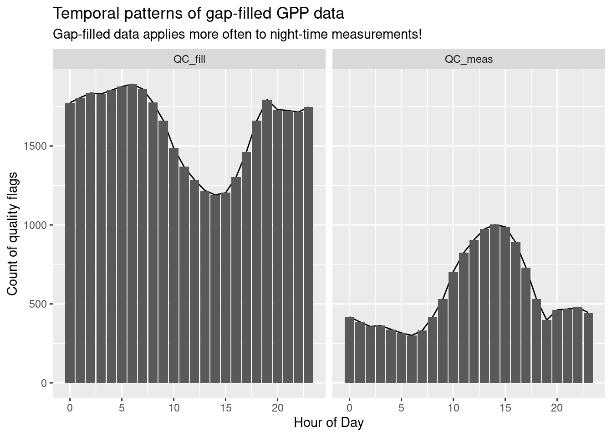
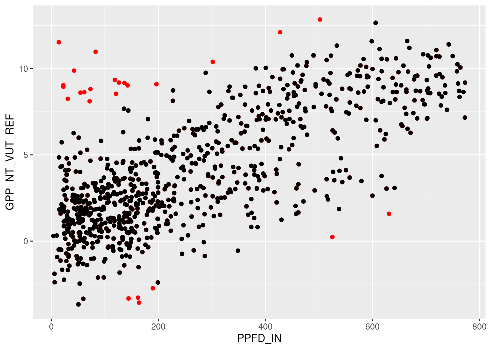
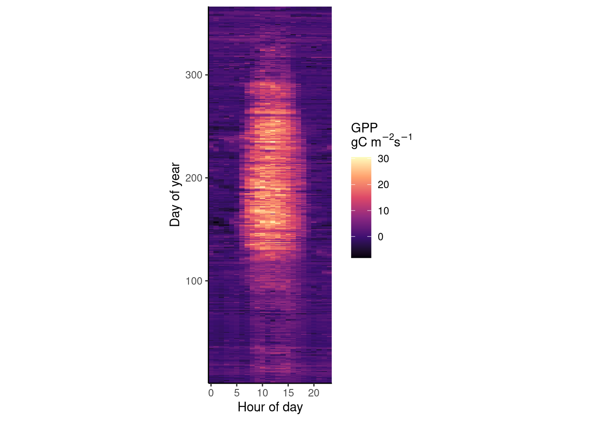
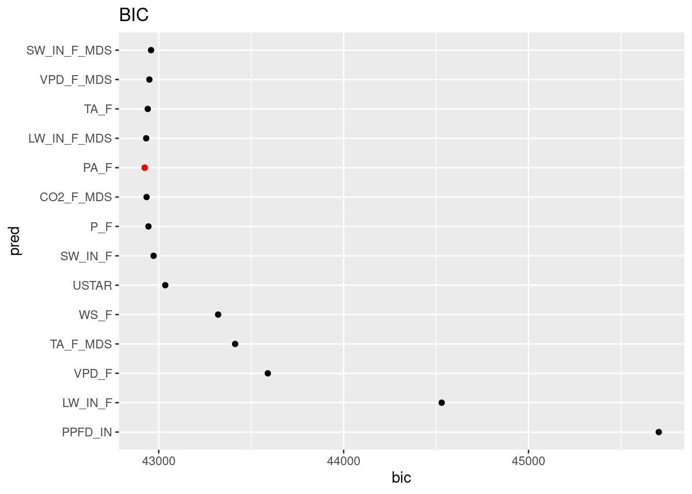

Chapter 12 Solutions
12.1 Chapter 01 - Getting Started
12.1.1 Magic Trick
magic_trick <- function(original_value) {
# Check if the argument for original_value is a numeric value
if (!is.numeric(original_value)) stop("Error: Input is not a numeric value.")
# Check if the argument for original_value is an integer
if (round(original_value) != original_value) stop("Error: Input is not an integer.")
# Check if original value is between 1 and 20
if (original_value < 1 | original_value > 20) stop("Error: Input is outside of 1 and 20.")
# Define temporary variable
tmp <- original_value + 1
tmp <- tmp * 2
tmp <- tmp + 4
tmp <- tmp / 2
final_value <- tmp - original_value
cat("The original value was: ", original_value, "\n",
"The final value is: ", final_value, "\n")
}Let’s try out some false input arguments to see, if our function correctly captures them and reports back what is wrong:
magic_trick("7") ## Error in magic_trick("7") : Error: Input is not a numeric value.
## 2. stop("Error: Input is not a numeric value.")
## 1. magic_trick("7")magic_trick(7.5) ## Error in magic_trick(7.5) : Error: Input is not an integer.
## 2. stop("Error: Input is not an integer.")
## 1. magic_trick("7")magic_trick(77) ## Error in magic_trick(77) : Error: Input is outside of 1 and 20.
## 2. stop("Error: Input is outside of 1 and 20.")
## 1. magic_trick(77)And now let us test, whether the magic trick works:
magic_trick(1)## The original value was: 1
## The final value is: 3magic_trick(7)## The original value was: 7
## The final value is: 3magic_trick(11)## The original value was: 11
## The final value is: 3magic_trick(20)## The original value was: 20
## The final value is: 312.2 Chapter 02 - Primers
12.2.1 Loops using for and while
# 1a. for-loop to compute sum from 1 - 100
sum <- 0
for (i in seq(100)) sum <- sum + i # for-loop iterating from 1 to 100
print(sum)## [1] 5050# 1b. while-loop to compute sum from 1 - 100
loop_status <- TRUE
counter <- 0
sum <- 0
while (loop_status) { # while-loop is repeated as long as loop_status is true
counter <- counter + 1
sum <- sum + counter
if (counter == 100) loop_status <- FALSE
}
print(sum)## [1] 505012.2.2 Add up all numbers that are multiples of 3 and 7
sum <- 0
for (i in seq(100)) {
if (i %% 3 == 0 && i %% 7 == 0 ) {
sum <- sum + i
}
}
print(paste0("The sum is of multiples of 3 and 7 within 1-100 is: ", sum))## [1] "The sum is of multiples of 3 and 7 within 1-100 is: 210"12.2.3 Define and interpolate vector
# Using a for-loop to identify first and last position of NA values
vec <- array(NA,c(100)) # Initiate vector of length 100 with NAs
vec[1:25] <- 6 # Fill up first 25 elements of 'vec' with value 6.
vec[66:100] <- -20 # Fill up elements 66:100 with value -20.
for (i in 2:99) { # for-loop iterating from 2 to 99
# NOTE: The reason we loop between 2 and 99 is because we need to compare
# neighboring positions to find the transition from entries with number to
# entries with NA (i-1, i, i + 1). Positions 0 and 101 are not defined
# in our vector and thus lead to an error when trying to access.
# Find last defined value
# Requires: Current position i is not NA but the next one is
if (!is.na(vec[i]) && is.na(vec[i+1])) last_non_na <- i
# Find first defined value
# Requires: Previous position is NA but not the current one
if (!is.na(vec[i]) && is.na(vec[i-1])) first_non_na <- i
}
# Get the increment that is needed for interpolation
last_value <- vec[last_non_na] # Last non-NA value
first_value <- vec[first_non_na] # First non-NA value
delta <- (last_value - first_value) / (last_non_na - first_non_na) # Change in y over change in x
for (i in 2:length(vec)) { # If loop iterating from 2 to length of vec
# If position is NA, replace it by previous value plus increment
if (is.na(vec[i])) vec[i] <- vec[i-1] + delta
}
# Create plot
# Intrinsic function 'plot' requires the following arguments:
# 1st argument: vecor of x-values
# 2nd argument: vecor of y-values (must be of same length as x-value vector)
plot(seq(length(vec)),
vec,
type = "l",
main = "Interpolated vector using for-loop")
# Using a while-loop to identify first and last position of NA values
vec <- array(NA,c(100)) # Initiate vector of length 100 with NAs
vec[1:25] <- 6 # Fill up first 25 elements of 'vec' with value 6.
vec[66:100] <- -20 # Fill up elements 66:100 with value -20.
last_non_na <- 1
is_defined <- TRUE
while (is_defined){ # Search last element defined before gap and store its position
if (is.na(vec[last_non_na+1])){
is_defined <- FALSE
} else {
last_non_na <- last_non_na+1
}
}
# One may omit the boolean variable 'defined' and directly write:
last_non_na <- 1
while (!is.na(vec[last_non_na+1])) last_non_na <- last_non_na + 1
# Search first element defined after gap and store its position
first_non_na <- last_non_na + 1
while (is.na(vec[first_non_na])) first_non_na <- first_non_na + 1
# Get the increment that is needed for interpolation
last_value <- vec[last_non_na] # Last non-NA value
first_value <- vec[first_non_na] # First non-NA value
delta <- (last_value - first_value) / (last_non_na - first_non_na) # Change in y over change in x
for (i in 2:length(vec)) { # If loop iterating from 2 to length of vec
# If position is NA, replace it by previous value plus increment
if (is.na(vec[i])) vec[i] <- vec[i-1] + delta
}
# Create plot
plot(seq(length(vec)),
vec,
type = "l",
main = "Interpolated vector using while-loop")
12.2.4 Find the sum of the values per column
values <- matrix(c(1,2,3,4,5,6), nrow = 2 ,ncol = 3)
cat("Dataframe: \n \n")## Dataframe:
## values## [,1] [,2] [,3]
## [1,] 1 3 5
## [2,] 2 4 6# Initialize the sums of the columns to zero
col_sum <- rep(0,ncol(values))
cat("\n Initial vector col_sum: ", col_sum)##
## Initial vector col_sum: 0 0 0# Iterate over the columns
for (j in 1:ncol(values)){
#iterate over the rows for each column
for (i in 1:nrow(values)){
#calculate the sum of the jth column by adding the values of each row (of the jth column)
col_sum[j] <- col_sum[j] + values[i,j]
}
}
cat("\n Final vector col_sum: ", col_sum)##
## Final vector col_sum: 3 7 1112.3 Chapter 03 - Data wrangling
12.3.1 Tidyverse exercises
# a.
dplyr::starwars |> dplyr::filter(skin_color == "pale", homeworld == "Naboo" | homeworld == "Ryloth") |> nrow() ## [1] 2# b.
dplyr::starwars |> unnest_wider(starships) |> filter_at(vars(contains("...")), all_vars(!is.na(.))) ## # A tibble: 1 × 18
## name height mass hair_…¹ skin_…² eye_c…³ birth…⁴ sex gender homew…⁵
## <chr> <int> <dbl> <chr> <chr> <chr> <dbl> <chr> <chr> <chr>
## 1 Obi-Wan Ken… 182 77 auburn… fair blue-g… 57 male mascu… Stewjon
## # … with 8 more variables: species <chr>, films <list>, vehicles <list>,
## # ...1 <chr>, ...2 <chr>, ...3 <chr>, ...4 <chr>, ...5 <chr>, and abbreviated
## # variable names ¹hair_color, ²skin_color, ³eye_color, ⁴birth_year,
## # ⁵homeworld# c.
dplyr::starwars |> unnest(starships) |> filter(films == "Return of the Jedi") |> top_n(-1, height) |> select(name, starships) ## # A tibble: 1 × 2
## name starships
## <chr> <chr>
## 1 Nien Nunb Millennium Falcon12.3.2 Aggregation of data in tidy style
# Load and wrangle the hhdf dataset
hhdf <- read_csv("data/FLX_CH-Lae_FLUXNET2015_FULLSET_HH_2004-2006.csv") |>
dplyr::select(
starts_with("TIMESTAMP"),
ends_with("_F"),
GPP_NT_VUT_REF,
NEE_VUT_REF_QC,
starts_with("SWC_F_MDS_"),
-contains("JSB"),
NIGHT
)## Rows: 52608 Columns: 235
## ── Column specification ────────────────────────────────────────────────────────
## Delimiter: ","
## dbl (235): TIMESTAMP_START, TIMESTAMP_END, TA_F_MDS, TA_F_MDS_QC, TA_ERA, TA...
##
## ℹ Use `spec()` to retrieve the full column specification for this data.
## ℹ Specify the column types or set `show_col_types = FALSE` to quiet this message.# Get different statistics for VPD_F
hhdf |>
mutate(date_time = lubridate::ymd_hm(TIMESTAMP_START),
date = lubridate::date(date_time)) |>
group_by(date) |>
summarise(VPD_F_mean = mean(VPD_F),
VPD_F_median = median(VPD_F),
VPD_F_min = min(VPD_F),
VPD_F_max = max(VPD_F),
VPD_F_sd = sd(VPD_F)) |>
head()## # A tibble: 6 × 6
## date VPD_F_mean VPD_F_median VPD_F_min VPD_F_max VPD_F_sd
## <date> <dbl> <dbl> <dbl> <dbl> <dbl>
## 1 2004-01-01 0.865 0.699 0.558 1.59 0.309
## 2 2004-01-02 0.911 0.833 0.601 1.29 0.211
## 3 2004-01-03 1.03 0.933 0.769 1.56 0.254
## 4 2004-01-04 1.12 0.976 0.788 1.80 0.317
## 5 2004-01-05 0.962 0.919 0.798 1.23 0.124
## 6 2004-01-06 1.33 1.16 0.932 2.40 0.39412.3.3 Temporal pattern of gap-filled data
# Create the two datasets
hhdf_low_quality <- hhdf |> filter(NEE_VUT_REF_QC != 0)
hhdf_high_quality <- hhdf |> filter(NEE_VUT_REF_QC == 0)
# Calculate means
mean_full_df <- mean(hhdf$GPP_NT_VUT_REF)
mean_low_quality <- mean(hhdf_low_quality$GPP_NT_VUT_REF)
mean_high_quality <- mean(hhdf_high_quality$GPP_NT_VUT_REF)
cat("\n GPP mean values of: full --- low quality --- high quality datasets \n",
mean_full_df, "---", mean_low_quality, "---", mean_high_quality)##
## GPP mean values of: full --- low quality --- high quality datasets
## 4.204388 --- 3.055437 --- 7.513288# Relationship between data quality and time
# Save hour of day (hod) in separate variable
hhdf |>
# Turn numeric time into time-object
mutate(date = lubridate::ymd_hm(TIMESTAMP_START),
hod = lubridate::hour(date)) |>
dplyr::group_by(hod) |>
nest() |>
mutate(QC_meas = purrr::map_dbl(data, ~. |> dplyr::filter(NEE_VUT_REF_QC == 0) |> nrow()),
QC_fill = purrr::map_dbl(data, ~. |> dplyr::filter(NEE_VUT_REF_QC != 0) |> nrow())) |>
pivot_longer(cols = c("QC_meas", "QC_fill"),
names_to = "qc_flag",
values_to = "qc_value") |>
mutate(qc_flag = as.factor(qc_flag)) |>
ggplot() +
aes(x = hod, y = qc_value) +
geom_line() +
geom_col() +
facet_wrap(~qc_flag) +
labs(title = "Temporal patterns of gap-filled GPP data",
subtitle = "Gap-filled data applies more often to night-time measurements!",
x = "Hour of Day",
y = "Count of quality flags")
12.4 Chapter 04 - Data visualisation
12.4.1 Identifying Outliers
# 1. Identify Outliers
# Load packages
library(tidyverse)
library(lubridate) # not part of the automatic load of tidyverse
# read half-hourly data
hhdf <- read_csv("data/FLX_CH-Lae_FLUXNET2015_FULLSET_HH_2004-2006.csv") |>
# interpret -9999 as missing value
na_if(-9999) |>
# interpret timestamp as a date-time object
mutate_at(vars(starts_with("TIMESTAMP_")), ymd_hm)## Rows: 52608 Columns: 235
## ── Column specification ────────────────────────────────────────────────────────
## Delimiter: ","
## dbl (235): TIMESTAMP_START, TIMESTAMP_END, TA_F_MDS, TA_F_MDS_QC, TA_ERA, TA...
##
## ℹ Use `spec()` to retrieve the full column specification for this data.
## ℹ Specify the column types or set `show_col_types = FALSE` to quiet this message.# aggregate to daily
ddf <- hhdf |>
# create a date-only object
mutate(date = as_date(TIMESTAMP_START)) |>
# aggregate
group_by(date) |>
summarise(GPP_NT_VUT_REF = mean(GPP_NT_VUT_REF, na.rm = TRUE),
PPFD_IN = mean(PPFD_IN, na.rm = TRUE),
.groups = 'drop' # not mandatory
)
# fit linear regression
linmod <- lm(GPP_NT_VUT_REF ~ PPFD_IN, data = ddf)
# get box plot statistics for determining "outlying" points
out_boxplot <- boxplot.stats(linmod$residuals)
# record the row numbers of outlying points based on the output list element 'out'
# row numbers are the names of elements in out_boxplot$out, provided as strings.
# convert them to integers.
idx_outlying <- names(out_boxplot$out) |> as.integer()
# 2. Remove Outliers
# In base-R, this could be done as:
ddf$GPP_NT_VUT_REF_clean <- ddf$GPP_NT_VUT_REF
ddf$GPP_NT_VUT_REF_clean[idx_outlying] <- NA
# In tidyverse style:
ddf <- ddf |>
mutate(rownumber = row_number()) |> # could also do: mutate(rownumber = 1:nrow(.))
mutate(GPP_NT_VUT_REF_clean = ifelse(rownumber %in% idx_outlying, NA, GPP_NT_VUT_REF))
## 3. Create scatterplot
ddf |>
ggplot(aes(x = PPFD_IN)) +
geom_point(aes(y = GPP_NT_VUT_REF), color = "red") + # first, plot all points including outliers in one color
geom_point(aes(y = GPP_NT_VUT_REF_clean), color = "black") # then overplot cleaned data in black so that remaining red points are outliers## Warning: Removed 265 rows containing missing values (`geom_point()`).## Warning: Removed 290 rows containing missing values (`geom_point()`).
12.4.2 Diurnal and seasonal cycles
## a. Half-hourly dataset
hhdf_meanseason <-
hhdf |>
mutate(hour_day = hour(TIMESTAMP_START),
day_year = yday(TIMESTAMP_START)) |>
group_by(hour_day, day_year) |>
summarise(gpp = mean(GPP_NT_VUT_REF, na.rm = TRUE))## `summarise()` has grouped output by 'hour_day'. You can override using the
## `.groups` argument.## b. Raster plot
hhdf_meanseason |>
ggplot(aes(x = hour_day, y = day_year, fill = gpp)) +
geom_raster()
## c. Make raster plot publishable - This is up to your judgement. Below is an example.
library(viridisLite)
hhdf_meanseason |>
# as above
ggplot(aes(x = hour_day, y = day_year, fill = gpp)) +
geom_raster() +
# use a color scale that works also for color-blind people
scale_fill_viridis_c(option = "magma") +
## change theme (axes style)
theme_classic() +
# adjust the aspect ratio of the plotting region
coord_fixed(ratio=0.2) +
# labels of each mapping axis, \n is a line break
labs(x = "Hour of day",
y = "Day of year",
fill = expression(paste("GPP \ngC m"^-2, "s"^-1))) +
# avoid adding distance from the lowest values to the axes
scale_x_continuous(expand = c(0,0)) + scale_y_continuous(expand = c(0,0))
12.5 Chapter 05 - Data variety
12.5.1 Files and file formats
Reading and writing human readable files
The below code shows how to read in the different demo data sets (CSV files). You will note that they all need separate settings, and that a given file extension isn’t necessarily a reflection of the content the file. Inspection of your read in data is therefore key.
# read in the first demo
demo_01 <- read.table(
"https://raw.githubusercontent.com/geco-bern/agds/main/data/demo_1.csv",
sep = ",",
header = TRUE
)
# read in second demo
demo_02 <- read.table(
"https://raw.githubusercontent.com/geco-bern/agds/main/data/demo_2.csv",
sep = " ",
header = TRUE
)
demo_03 <- read.table(
"https://raw.githubusercontent.com/geco-bern/agds/main/data/demo_3.csv",
sep = ";",
comment.char = "|",
header = TRUE,
)All the demo data sets are equal, except for their formatting. We can test if the content is identical by using the identical() function in R.
# compare 1 with 2
identical(demo_01, demo_02)## [1] TRUE# compare 2 with 3
identical(demo_02, demo_03)## [1] TRUE# Given transitive properties, demo_01 is identical to demo_03You can combine the three datasets using the {dplyr} bind_rows() function.
# combining all demo datasets
demo_all <- dplyr::bind_rows(demo_01, demo_02, demo_03)
# writing the data to a temporary CSV file
write.table(
demo_all,
file = file.path(tempdir(), "tmp_csv_file.csv"),
col.names = TRUE,
row.names = FALSE,
sep = ","
)
# or...
write.csv(
demo_all,
file.path(tempdir(), "tmp_csv_file.csv"),
row.names = FALSE
)
# read in the previous CSV file
demo_all_new <-read.table(
file.path(tempdir(), "tmp_csv_file.csv"),
header = TRUE,
sep = ","
)
# writing the data to a JSON file
jsonlite::write_json(demo_all_new, path = "./my_json_file.json")Reading and writing binary files
- It is a NetCDF file
- the {terra} library (see Table xyz)
- Temperature data for Switzerland at noon on 2021-01-01
# read unknown netcdf file using the {terra} library
library(terra)
unkown_netcdf <- terra::rast("https://raw.githubusercontent.com/geco-bern/agds/main/data/some_data.nc")
# print the meta-data by calling the variable
unknown_netcdf
# visually plot the data
terra::plot(unknown_netcdf)# write the data as a geotiff (other options are possible as well in writeRaster)
terra::writeRaster(
unknown_netcdf,
filename = "./test.tif",
overwrite = TRUE
)# read unknown tif file using the {terra} library
library(terra)
unkown_tif <- terra::rast("https://raw.githubusercontent.com/geco-bern/agds/main/data/some_data.tif")
# print the meta-data by calling the variable
unknown_tif
# visually plot the data
terra::plot(unknown_tif)
# Are they exactly the same
terra::plot(unknown_tif - unknown_netcdf)
# or...
identical(unkown_netcdf, unkown_tif)- Looks similar to the NetCDF data, however one pixel is different as shown by taking the difference between both datasets.
12.6 Chapter 06 - Open Science
12.6.1 External data
The project data is stored in one folder without folders to sort data from code to give it structure.
The project can be re-organized using a simple project structure as such:
~/project/
├─ data/
├─ 00_convert_data.R
├─ survey.xlsx # the original
├─ survey.csv # from (xls conversion (copy 1).csv)
├─ R/
├─ my_functions.R
├─ analysis/
├─ 00_model_fits.R # from Model-test-final.R
├─ 01_model_plots.R # from Plots.R
├─ vignettes/
├─ Report.Rmd
├─ manuscript/
├─ Report.html
├─ Figure 1.pngNote that duplicate files are removed, code to cleanup data is numbered and stored with the data, functions which are accessible for analysis are stored in the R folder, Rmarkdown files are stored in the vignettes folder and the results of the full analysis is stored in a manuscript folder. Some variations on naming is possible.
12.8 Chapter 08 - Regression and classification
12.8.1 Warm-up Exercises
12.8.1.1 Loops and Ifs
A <- matrix(c(6, 7, 3, NA, 15, 6, 7,
8, 9, 12, 6, 11, NA, 3,
9, 4, 7, 3, 21, NA, 6,
7, 19, 6, NA, 15, 8, 10),
nrow = 4, byrow = TRUE)
B <- c(8, 4, 12, 9, 15, 6)
summ <- data.frame()
for (i in 1:nrow(A)){
for (j in 1:ncol(A)){
if (is.na(A[i,j])){
A[i,j] <- max(B)
}
}
B <- B[-which(B == max(B))] # update the B vector removing the biggest values
summ <- bind_rows(summ, data.frame(row_number = i, avg = mean(B)))
}
summ## row_number avg
## 1 1 7.80
## 2 2 6.75
## 3 3 6.00
## 4 4 5.0012.8.1.2 Stepwise regression
vec_files <- list.files("data", pattern = "_FLUXNET2015_FULLSET_DD_", full.names = TRUE)
list_df <- purrr:::map(as.list(vec_files), ~readr::read_csv(.))
names(list_df) <- vec_files
clean_fluxnet_dd <- function(df){
df %>%
## select only the variables we're interested in
select(starts_with("TIMESTAMP"),
ends_with("_F"),
ends_with("_F_MDS"),
# ends_with("_ERA"),
starts_with("_SWC_F_MDS"),
CO2_F_MDS,
PPFD_IN,
GPP_NT_VUT_REF,
NEE_VUT_REF_QC,
USTAR,
-starts_with("G_"),
-starts_with("LE_"),
-starts_with("H_"),
-contains("JSB")
) %>%
## convert to a nice date object
mutate(TIMESTAMP = lubridate::ymd(TIMESTAMP)) %>%
## not setting heavily gapfilled data to zero
## set all -9999 to NA
na_if(-9999) %>%
# drop NAs
drop_na() %>%
## filter bad data (at least 80% must be measured or good quality gapfilled)
mutate(GPP_NT_VUT_REF = ifelse(NEE_VUT_REF_QC < 0.8, NA, GPP_NT_VUT_REF)) %>%
## drop QC variables (no longer needed), except NEE_VUT_REF_QC
select(-ends_with("_QC"))
}
df <- purrr::map(list_df, ~clean_fluxnet_dd(.)) %>%
dplyr::bind_rows(.id = "siteid") %>%
dplyr::mutate(siteid = str_sub(siteid, start = 10, end = 15))
readr::write_csv(df, "data/df_for_stepwise_regression.csv")## specify target variable (as above)
target <- 'GPP_NT_VUT_REF'
## determine predictors as all except date, siteid and target
preds <- df %>%
dplyr::select(-target, -TIMESTAMP, -siteid) %>%
names()## Warning: Using an external vector in selections was deprecated in tidyselect 1.1.0.
## ℹ Please use `all_of()` or `any_of()` instead.
## # Was:
## data %>% select(target)
##
## # Now:
## data %>% select(all_of(target))
##
## See <https://tidyselect.r-lib.org/reference/faq-external-vector.html>.# This is the vector of candidate predictors to be added in the model. To begin with, consider all as candidates.
preds_candidate <- preds
# predictors retained in the model from the previous step. To begin with, is empty.
preds_retained <- c()
## work with lists as much as possible (more flexible!)
df_metrics <- data.frame()
## outer loop for k predictors
for (k_index in 1:length(preds)){
# rsq_candidates <- c()
df_rsq_candidates <- data.frame()
linmod_candidates <- list()
## inner loop for single additional predictor
for (ipred in preds_candidate){
# variable vector (new variable + retained variables) used in regression
pred_add <- c(preds_retained, ipred)
# define formulate with newly-added predictor
forml <- as.formula(paste( target, '~', paste(pred_add, collapse = '+')))
# fit linear model
fit_lin <- lm(forml, data = df)
# add model object to list, and name the element according to the added variable
linmod_candidates[[ ipred ]] <- fit_lin
# record metrics for all candidates
rsq <- summary(fit_lin)[["r.squared"]]
df_rsq_candidates <- bind_rows(df_rsq_candidates, data.frame(pred = ipred, rsq = rsq)) # when storing R2 in a data frame
# rsq_candidates <- c(rsq_candidates, rsq) # when storing R2 as a vector
}
## get name of candidate predictor that achieved the highest R2.
pred_add <-
df_rsq_candidates %>% # when storing R2 in a data frame
arrange(desc(rsq)) %>%
slice(1) %>%
pull(pred) %>%
as.character()
# pred_add <- preds_candidate[ which.max(rsq_candidates) ] # when storing R2 as a vector
## add best predictors to retained predictors
preds_retained <- c(preds_retained, pred_add)
# record AIC and BIC and adjusted-R2 of the respective model
df_metrics <- df_metrics %>%
bind_rows(
data.frame( pred = pred_add,
rsq = summary(linmod_candidates[[ pred_add ]])[["r.squared"]],
adj_rsq = summary(linmod_candidates[[ pred_add ]])[["adj.r.squared"]],
aic = AIC(linmod_candidates[[ pred_add ]]),
bic = BIC(linmod_candidates[[ pred_add ]])
)
)
# remove the selected variable from the candidate variable list
preds_candidate <- preds_candidate[-which(preds_candidate == pred_add)]
# preds_candidate <- setdiff(preds_candidate,pred_add) # alternative
# Printing information on model development
cat("\n Next Best Model: GPP_NT_VUT_REF ~ ", paste(preds_retained, collapse = " + "))
}##
## Next Best Model: GPP_NT_VUT_REF ~ PPFD_IN
## Next Best Model: GPP_NT_VUT_REF ~ PPFD_IN + LW_IN_F
## Next Best Model: GPP_NT_VUT_REF ~ PPFD_IN + LW_IN_F + VPD_F
## Next Best Model: GPP_NT_VUT_REF ~ PPFD_IN + LW_IN_F + VPD_F + TA_F_MDS
## Next Best Model: GPP_NT_VUT_REF ~ PPFD_IN + LW_IN_F + VPD_F + TA_F_MDS + WS_F
## Next Best Model: GPP_NT_VUT_REF ~ PPFD_IN + LW_IN_F + VPD_F + TA_F_MDS + WS_F + USTAR
## Next Best Model: GPP_NT_VUT_REF ~ PPFD_IN + LW_IN_F + VPD_F + TA_F_MDS + WS_F + USTAR + SW_IN_F
## Next Best Model: GPP_NT_VUT_REF ~ PPFD_IN + LW_IN_F + VPD_F + TA_F_MDS + WS_F + USTAR + SW_IN_F + P_F
## Next Best Model: GPP_NT_VUT_REF ~ PPFD_IN + LW_IN_F + VPD_F + TA_F_MDS + WS_F + USTAR + SW_IN_F + P_F + CO2_F_MDS
## Next Best Model: GPP_NT_VUT_REF ~ PPFD_IN + LW_IN_F + VPD_F + TA_F_MDS + WS_F + USTAR + SW_IN_F + P_F + CO2_F_MDS + PA_F
## Next Best Model: GPP_NT_VUT_REF ~ PPFD_IN + LW_IN_F + VPD_F + TA_F_MDS + WS_F + USTAR + SW_IN_F + P_F + CO2_F_MDS + PA_F + LW_IN_F_MDS
## Next Best Model: GPP_NT_VUT_REF ~ PPFD_IN + LW_IN_F + VPD_F + TA_F_MDS + WS_F + USTAR + SW_IN_F + P_F + CO2_F_MDS + PA_F + LW_IN_F_MDS + TA_F
## Next Best Model: GPP_NT_VUT_REF ~ PPFD_IN + LW_IN_F + VPD_F + TA_F_MDS + WS_F + USTAR + SW_IN_F + P_F + CO2_F_MDS + PA_F + LW_IN_F_MDS + TA_F + VPD_F_MDS
## Next Best Model: GPP_NT_VUT_REF ~ PPFD_IN + LW_IN_F + VPD_F + TA_F_MDS + WS_F + USTAR + SW_IN_F + P_F + CO2_F_MDS + PA_F + LW_IN_F_MDS + TA_F + VPD_F_MDS + SW_IN_F_MDSdata.frame(df_metrics$pred) # order in which variables enter the model## df_metrics.pred
## 1 PPFD_IN
## 2 LW_IN_F
## 3 VPD_F
## 4 TA_F_MDS
## 5 WS_F
## 6 USTAR
## 7 SW_IN_F
## 8 P_F
## 9 CO2_F_MDS
## 10 PA_F
## 11 LW_IN_F_MDS
## 12 TA_F
## 13 VPD_F_MDS
## 14 SW_IN_F_MDSdf_metrics %>%
arrange(desc(rsq)) %>%
knitr::kable()| pred | rsq | adj_rsq | aic | bic |
|---|---|---|---|---|
| SW_IN_F_MDS | 0.5287706 | 0.5280746 | 42844.05 | 42958.58 |
| VPD_F_MDS | 0.5287706 | 0.5281244 | 42842.05 | 42949.42 |
| TA_F | 0.5287514 | 0.5281550 | 42840.43 | 42940.65 |
| LW_IN_F_MDS | 0.5287106 | 0.5281639 | 42839.25 | 42932.31 |
| PA_F | 0.5286660 | 0.5281690 | 42838.15 | 42924.05 |
| CO2_F_MDS | 0.5276995 | 0.5272513 | 42855.60 | 42934.34 |
| P_F | 0.5267412 | 0.5263421 | 42872.84 | 42944.43 |
| SW_IN_F | 0.5248973 | 0.5245468 | 42907.76 | 42972.19 |
| USTAR | 0.5212628 | 0.5209600 | 42978.11 | 43035.38 |
| WS_F | 0.5061483 | 0.5058880 | 43271.22 | 43321.33 |
| TA_F_MDS | 0.5008611 | 0.5006507 | 43370.32 | 43413.27 |
| VPD_F | 0.4909870 | 0.4908261 | 43554.30 | 43590.10 |
| LW_IN_F | 0.4374452 | 0.4373266 | 44501.85 | 44530.48 |
| PPFD_IN | 0.3627837 | 0.3627166 | 45682.99 | 45704.47 |
library(ggplot2)
df_metrics$pred <- factor(df_metrics$pred, levels = df_metrics$pred)
ggplot() +
geom_point(data = df_metrics, aes(x = pred, y = rsq)) +
geom_point(data = filter(df_metrics, rsq == max(rsq)), aes(x = pred, y = rsq), color = "red") +
labs(title = expression(italic(R)^2)) +
coord_flip()
ggplot() +
geom_point(data = df_metrics, aes(x = pred, y = adj_rsq)) +
geom_point(data = filter(df_metrics, adj_rsq == max(adj_rsq)), aes(x = pred, y = adj_rsq), color = "red") +
labs(title = expression(paste("Adjusted-", italic(R)^2))) +
coord_flip()
ggplot() +
geom_point(data = df_metrics, aes(x = pred, y = aic)) +
geom_point(data = filter(df_metrics, aic == min(aic)), aes(x = pred, y = aic), color = "red") +
labs(title = "AIC")+
coord_flip()
ggplot() +
geom_point(data = df_metrics, aes(x = pred, y = bic)) +
geom_point(data = filter(df_metrics, bic == min(bic)), aes(x = pred, y = bic), color = "red") +
labs(title = "BIC")+
coord_flip()
12.8.1.3 Finding best predictor
df <- read_csv("data/df_for_stepwise_regression.csv")## Rows: 9975 Columns: 17
## ── Column specification ────────────────────────────────────────────────────────
## Delimiter: ","
## chr (1): siteid
## dbl (15): TA_F, SW_IN_F, LW_IN_F, VPD_F, PA_F, P_F, WS_F, TA_F_MDS, SW_IN_F...
## date (1): TIMESTAMP
##
## ℹ Use `spec()` to retrieve the full column specification for this data.
## ℹ Specify the column types or set `show_col_types = FALSE` to quiet this message.## specify target variable
target <- 'GPP_NT_VUT_REF'
## determine predictors as all except site ID, timestamp, and the target (should be 14)
preds <- df |>
dplyr::select(-target, -siteid, -TIMESTAMP) |>
names()
## initialise an empty data frame (necessary, because otherwise we cannot use bind_rows() below)
df_rsq <- data.frame()
# rsq_list <- c() # alternative for vector
for (var in preds){
## create formula dynamically
forml <- as.formula(paste(target, "~", var))
## fit linear model
fit_lin <- lm(forml, data = df)
## extract R2 from linear model
rsq <- summary(fit_lin)[["r.squared"]]
## add a row to the data frame that holds the results
df_rsq <- bind_rows(df_rsq, data.frame(pred = var, rsq = rsq))
# rsq_list <- c(rsq_list,rsq) # alternative with vector
}
## print a table arrange by best rsq at the top
df_rsq |> arrange(-rsq) |> knitr::kable()| pred | rsq |
|---|---|
| PPFD_IN | 0.3627837 |
| SW_IN_F_MDS | 0.3504158 |
| SW_IN_F | 0.3503274 |
| TA_F_MDS | 0.2766429 |
| TA_F | 0.2766277 |
| VPD_F | 0.1179701 |
| LW_IN_F_MDS | 0.1163707 |
| LW_IN_F | 0.1142586 |
| VPD_F_MDS | 0.1115091 |
| CO2_F_MDS | 0.0501273 |
| WS_F | 0.0122956 |
| P_F | 0.0029678 |
| PA_F | 0.0002874 |
| USTAR | 0.0000309 |
## alternative: determine the first variable to enter into our model
# preds[which.max(rsq_list)]
## use the data frame that holds the results for plotting
df_rsq |>
ggplot(aes(x = reorder(pred, rsq), y = rsq)) +
geom_bar(stat = "identity") +
labs(y = expression(italic(R)^2), x = "Variable") +
coord_flip()